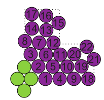

Programmable self-assembly in a thousand-robot swarm
Simulación que demuestra que un enjambre de mil robot es capaz realizar formas bidimensionales
a través de interacciones locales programables y que tiene capacidad de detección local,
logrando un comportamiento colectivo de gran complejidad.
